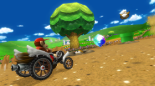

Monty Moles in Moo Moo Meadows [created by Atlas]
Wiimmfi competition #299 (2024-10.3)
A plague of Monty Moles are disrupting the fields of Moo Moo Meadows! Use items to defeat 10 of them and give the cows a relief.
The competition ends on Tuesday 29 October 2024, 06:59 PM CDT
About the names...
Since these are public on the actual competitions.wiimmfi.de, these will not be replaced with dummy data.
How to get competitions?
The competition patcher is finally finished - here is a tutorial on how to patch your console to download competitions from Wiimmfi.
Wii
- Step 1: Start the unmodified original game (from disc or from USB), but not the Wiimmfi-patched version
- Step 2: Go to Settings → Nintendo WFC Connection ("Network settings" in NTSC) → Message Service. If you have subscribed the service, unsubscribe it and subscribe again.
If you haven't enabled the service yet, activate it. If you get error 109139, make sure WC24 is enabled in the Wii settings.
- Step 3: Run the competition patcher
(Step 2 is only needed if you'd like to receive announcement letters to your message board).
You then need to use use a Wiimmfi-patched ISO or CTGP with disabled CTs and no SD card savegame. The Auto Wiimmfi Patcher (which patches a disc on the
fly) might also work if you use version v0.5 or higher, but that hasn't been tested yet.
In case you still haven't received the competition after 12 hours although your Wii has been in standby (yellow LED) you may try to follow these steps again and press "1"
when the patcher finished. This makes the Wii immediately check for a new competition, but this may break automatic standby checks for new competitions,
so only do that if the standby download doesn't work for you anyways.
Wii U
The WiiU has no WiiConnect24 download manager, so a permanent patch for automatic downloads is not possible. You will need to run the downloader app every time you'd like to check for a new competition.
Just download it to your SD card and run it to download the current competition to your savegame.
The effects of this patcher are reset when you leave the vWii, so you need to run it every time.
Download
You can find a video tutorial on YouTube: Wii | Wii U
Competition status
Competitions available: 45/46
1 competition missing
Has the patch been successful?
Enter your Wii friend code (from the address book in the system menu) to check if your Wii has already requested a competition.
Collecting competition data
If you visited this page to upload your save game to help us collect all the different competitions, you can upload it with this form:
This upload form is currently broken. Please try again later.
This form supports VFF files (wc24dl.vff file from your savegame), BIN files (a complete savegame) and
RKC files (the competition itself, whereever you might have got that from).
The wc24dl.vff file can either be copied from your savegame directly (when you extracted it to SD card with an app
like Savegame Manager GX) or can also be taken from old NAND
backups. Old NAND backups are a great source for the older competitions as the save game tends to have a newer one.
You can extract a Bootmii NAND backup (nand.bin) with tools like nandExtract;
the VFF file can then be found in /title/00010004/524d43xx/data/, where xx is a region-specific value.
If you have an old wc24dl.vff / data.bin file on your SD card, please upload it with the form above. If you don't, please don't just copy the current one from your Wii to the
SD card and upload that, instead, just use the competition patcher to upload the version which is currently on your Wii - files uploaded using the patcher can automatically be
checked for new competitions by the competition service - for files uploaded with the form this is not the case and we need to manually check if it contains a missing
competition
The patcher checks for and uploads the following files:
- Original Mario Kart Wii savegame (PAL/USA/JAP/KOR)
- Wiimms MKW Fun savegame (PAL/USA/JAP)
from the following sources:
- Wii NAND
- SD/USB: /private/wii (system menu)
- SD/USB: /FSTOOLBOX (FStoolbox)
- SD/USB: /savegames (Savegame Manager GX)
- SD/USB: /WIISAVES (Savegame Extractor)
- SD/USB: /riivolution (Riivolution / CTGP)
More information about competition collecting can be found here.